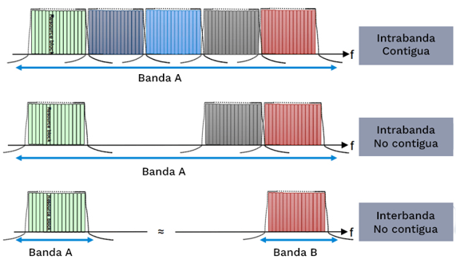

AUTONOMOUS UNIVERSITY OF THE STATE OF MEXICO
UAEM Teotihuacan Valley University Center

Network architecture
4.5 o LTE-A
Introduction
In a strictly technical sense, the 4.5G network is an extension of 4G LTE and is an emerging technology also called License Assisted Access (LAA) that works by aggregating licensed and unlicensed LTE frequency bands.
Past of 4.5G
1G:
The signal is the name for the first generation of mobile technologies, which began operating in the early 1980s. Although the antennas were connected digitally to the telephone system, this network was basically analog and achieved data transfer rates of up to 10 Kb/s.
2G:
Also known as Global System for Mobile Communications (GSM), this protocol made it possible to standardize, and therefore make mobile connections compatible, starting in the 1990s. It made it possible to achieve transfer rates of up to 97 Kb/s and gave step to the famous short message system, better known as SMS, in addition to outlining the first cellular forays into the Internet.
2.5G:
Actually called General Packet Radio Service (GPRS), it was an extension of the GMS system that allowed the simultaneous transmission of data and voice, through information packets, increasing the speed up to 32 Kb/s.
EDGE:
Halfway between 2G and 3G technology, Enhanced Data Rates for GSM Evolution evolved, which in Spanish means “Improved Data Rates for the evolution of GSM”, expanding transfer rates up to 480 Kb/s.
3G:
Implemented around 2001, it is currently the type of cellular technology with the greatest penetration in the market. It paved the way for efficient Internet browsing, the use of social networks and the first voice over IP experiences.
3G+:
In 2008, High Speed Downlink Packet Access (HSDPA) represented a technological bridge halfway between 3G and 4G technology, which allowed transfer speeds of up to 84 Mb/s.
4G:
4G LTE (4th Generation Long Term Evolution) is the fourth generation of mobile telephone technologies, which is the evolution of 2G (GSM/EDGE) and 3G (UMTS/HSPA/HSDPA) technologies, which were developed by the 3GPP organization. (3rd Generation Partnership Project), to allow users more quality and faster service. LTE is based on the IP protocol, supporting both IPv4 and IPv6, the main difference with 3G technology can be seen in the following aspects:
1) use of OFDM technology.
2) use of the MIMO technique.
3) definition of a System Architecture Evolution (SAE).
Where, MIMO allows for high spectral efficiency, SAE improves data capacity, reducing the latency experienced by the user, and also uses time and frequency division duplexing TDD and FDD respectively, which improves the use of the spectrum. making its management more efficient, including unicast and broadcast services; and finally the use of channel coding provides security and reduces the probability of error in transmission. In 2004, the Third Generation Partnership Project (3GPP), a collaboration between telecommunications standards organizations, began developing LTE as a new air interface and radio access network architecture to meet the changing requirements of mobile communications.
The International Telecommunication Union (ITU) has begun outlining requirements for 4G technology, focusing on achieving higher data speeds, lower latency and improved spectral efficiency. LTE development focused on improving data speed, reducing latency, and increasing spectral efficiency.
In 2012, the first version of LTE was launched, offering download speeds of up to 100 Mbit/s. As the technology evolved, more advanced versions were developed, such as LTE Advanced, reaching speeds of up to 1 Gbit/s.
Emerged a decade ago and is based on a completely data platform, which simplifies the network architecture. The main qualities of 4G LTE connectivity (acronym for Fourth Generation Long-Term Evolution) are higher upload and download speeds, reaching up to 150 Mbps (10 times the speed of 3G) on mobile devices, along with lower “lags” ( delay) in data transmission, compared to previous generations.
LTE allows a theoretical download speed of 300 Mbit/s; The evolution of this technology, known as LTE Advanced, will present the necessary characteristics to be called 4G, offering theoretical speeds of up to 1 Gbit/s for users in a fixed location and 100 Mbit/s for mobile users.
LTE PRO (4.5G): :
Also known as 4G LTE Advanced, LTE-A or 4.5G, it is currently the highest point of mobile internet connection available in the world. Unlike traditional data connections, the LTE PRO network uses multiple antennas and advanced data transmission schemes. This new technology, incorporated into the Avantel network, has the potential to offer speeds of up to 286 Mbps. This mobile communication standard allows 4G voice calls to be made, a high definition technology supported by VoLTE technology, thereby increasing the sound quality, connection time between calls is reduced, allows browsing at the same time in 4G and improves battery life.
Modulations
Modulations in 4.5G allow for optimized data transmission at higher speeds and in high-density device environments. The main types of modulation are:
•QPSK (Quadrature Phase Shift Keying):
Primarily used for signals with low signal-to-noise conditions. QPSK is a robust modulation but has lower spectral efficiency compared to more complex modulations.
• 16-QAM (16-Quadrature Amplitude Modulation):
This modulation allows more bits to be sent per symbol compared to QPSK, making it more efficient under better signal-to-noise conditions. 16-QAM can transmit 4 bits per symbol.
• 64-QAM (64-Quadrature Amplitude Modulation):
Allows for even more data transmission by including 6 bits per symbol. This modulation is used in environments with a high signal-to-noise ratio, as it is more susceptible to noise.
• 256-QAM (256-Quadrature Amplitude Modulation):
The most advanced modulation used in 4.5G. It transmits 8 bits per symbol and is highly spectrally efficient, but it is also very sensitive to interference, making it optimal for ideal signal conditions.
Transmission and Network Optimization Techniques in 4.5G
• Carrier Aggregation (CA):
This technique combines multiple frequency blocks or "carriers" to increase transmission capacity and speed. It enables devices to connect to multiple frequency bands simultaneously, pooling the bandwidth of each to enhance user experience.
• MIMO (Multiple Input Multiple Output):
Uses multiple antennas at both the transmitter and receiver to improve network capacity and speed. In 4.5G, advanced configurations like 4x4 MIMO are implemented, allowing transmission capacity to multiply and enabling simultaneous data reception, which enhances performance in high-density user areas.
• CoMP (Coordinated MultiPoint):
Allows multiple base stations to work together to transmit and receive data to a device, improving coverage and speed in areas with weak coverage.
Multiplexing
This new radio architecture is characterized by high spectral efficiency through the use of two different multiplexing schemes:
• OFDMA. Orthogonal frequency division multiplexing. It is used in the downlink.
Subcarriers are assigned to each user, by means of orthogonal codes, according to the users' requirements. This method achieves strong noise immunity while allowing many frequency assignment criteria to be defined (type of service, quality of connection, tariff, etc.).
The subcarriers are modulated with a range of QPSK, 16QAM and 16QAM symbols.
Subcarrier representation in 5Mhz bandwidth in OFDMA to standardize LTE.

• SC-FDMA. Single Carrier Frequency Division Multiple Access. Although OFDMA multiplexing has advantages for the downstream channel, it is not suitable for the characteristics of the upstream channel, where the transmitter does not have the linear power required to maintain stable multiplexing symbols. Therefore, another technique is chosen to avoid triggering the device's battery consumption. The transmission process of the SC-FDMA scheme is very similar to that of OFDMA. In fact, it can be considered as a precoded version, using the discrete Fourier transform (DFT), of OFDMA.
The following figure shows a sequence of eight QPSK symbols in an example with 4 subcarriers. For OFDMA, the 4 symbols are taken in parallel, each modulating its own sub-carrier in the appropriate QPSK phase. After an OFDMA symbol period, some time is left (so that there is no overlap) before the next symbol period. In SC-FDMA, each symbol is transmitted sequentially. Thus, all 4 symbols are transmitted in the same time period. The highest symbol range requires four times the spectrum bandwidth. After four symbols the time is left to avoid overlaps mentioned above.
Representation of OFDMA (downstream channel) and SC-FDMA (upstream channel).

In relation to the spectrum, LTE allows an adaptive bandwidth: 1.4, 3, 5, 10, 15 and 20 MHz. As it could not be otherwise, to reach the speeds promised in the standard it is necessary to reach the previous maximum of 20Mhz, something that is not always possible for operators due to the limitations of the radio spectrum.
Radio spectrum (bandwidths)
The frequency or band in which communications links operate is between 3 Hz and 300 GHz, called the radio spectrum.
Radio Spectrum
The 4.5 LTE-A technology or network operates in frequencies from 450 MHz to 2600 MHz (Bands 7 and 8) and has a bandwidth of 20 MHz (Train for employment, n.d.)
In a strictly technical sense, the 4.5G network is an extension of 4G LTE and is an emerging technology also called License Assisted Access (LAA) that works by aggregating licensed and unlicensed LTE frequency bands (LTE-U in the 2.4 and 5 GHz spectrum). The use of these unlicensed spectrums allows antennas to allow an increase in connected devices from one thousand to one hundred thousand per antenna, this will alleviate network congestion and allow mobile devices to have greater bandwidth and therefore be faster and more agile.
For the Internet of Things, 4.5G networks operate under the parameters of LTE-M and LTE-U which are designed for machine-to-machine communication channels and also for the microcommunications required by sensors and IoT devices to “talk” to each other and to their central administrator. (Castillo, 2019)
Protocols
4.5G Network Standards
The 4.5G mobile generation is based on the standards used for 4G, which have been adapted to offer low-power wide area networks (LPWAN). These standards include:
• Cat-0:
20 MHz bandwidth, data rate of up to 1 Mbps and a Half-Duplex channel
• Cat-M1/Cat-M/LTE-M:
Uses less power consumption and cost than Cat-0 and is more compatible with LTE infrastructure, covering up to 11 km, provides a maximum rate of up to 1 Mbps on a 1.4 MHz frequency, has a Half-Duplex channel and is ideal for mobile and fixed applications.
• NB-IoT/Cat-M2:
Operates outside of the LTE bands and is more expensive, eliminates the use of a Gateway, uses a narrow band of 200 KHz in uplink and downlink, has a Half-Duplex channel and is ideal for static sensor applications.
The previous standards are used in 4.5G and also implement improvements that 4G does not have, such as:
• Offering a data rate greater than 1 Gbps (3 times more than 4G)
• Supporting up to 100 thousand connections in a cell (100 times more than 4G)
• Lower end-to-end transmission delay (10 milliseconds) (5 times more than 4G)
Access to the base radio
For access to the base radio, media access technologies are used to avoid interference or interruptions between the multiple users that are connected to the network using duplex technologies that can be of two types:
• Time division duplex:
Assigns a time to each cell phone and uses a single frequency in areas where traffic is not balanced and there must be synchronization between the receiver and transmitter.
• Frequency division duplex:
Uses two frequencies for each channel that transmit at the same time, which is why it presents a low efficiency in the use of the spectrum.
Multiple access control protocols
And to respond to multiple users at the same time, multiple access control techniques or protocols are used such as:
• FDMA (Frequency Division Access):
Access is based on the frequency indicated by the network
• TDMA (Time Division Access):
The network serves each user in short periods of time to make it imperceptible to the user.
• CDMA (Code Division Access):
Each user has a code to establish a connection at the same time.
• OFDMA (Orthogonal Frequency Division Multiple Access:
These are subcarriers with a smaller separation than FDMA that corresponds to each user, supporting more users. Frequency reuse establishes 7 bands arranged in hexagons that represent the coverage area of each base radio (cluster) that is repeated the number of times necessary to cover the coverage area so that there is the greatest amount of distance between base radios that operate on the same frequency.
Security protocols
Security within the 4.5G network is based on NAS/integrity encryption
NAS encryption
• NAS (Non-Access Stratum):
Securely delivers signaling messages between the user and the MME in the control plane, using control keys for encryption.
• RRC (Radio Resource Protocol):
It is a protocol that uses another protocol called PDCP (Packet Data Convergence Protocol) for encryption, integrity protection and transfer in the user and control planes. Thus, the RRC obtains the encryption keys by sending a security mode command between the user and the base radio that has integrity protection and an encryption algorithm. (Train yourself for employment, n.d.)
Infrastructure
The infrastructure of LTE (Long-Term Evolution) technology, also known as 4G and in its advanced evolution as LTE Advanced or 4.5G, is designed to provide high-speed and low-latency connectivity. Its architecture is based on key components that allow efficient and reliable data transmission.
1. eNodeB (Evolved Node B Base Station)
• It is the component that replaces traditional base stations (BTS in 2G and Node B in 3G).
• Directly connected to user devices and manages the radio signal.
• Its function is to manage connections and data transfer between mobile devices and the network.
eNodeB
2. EPC (Evolved Packet Core)
It is the core of the LTE network that manages the data transmission between the eNodeB and the data network. The main components of the EPC include:
o MME (Mobility Management Entity): Responsible for mobility management and user authentication.
o SGW (Serving Gateway): Responsible for routing and forwarding packets between the eNodeB and the external network.
o PGW (Packet Data Network Gateway): Acts as a connection point to external networks, such as the Internet.
o HSS (Home Subscriber Server): Subscriber database that stores authentication information and user profiles.
EPC
3. IP Transport Network
• LTE uses an IP network instead of traditional circuit-switched infrastructure.
• The IP transport network connects the EPC elements and enables data transmission over high-speed networks.
4. MIMO (Multiple Input Multiple Output) Antennas
• LTE uses MIMO technology, which allows the transmission of multiple signals on the same frequency channel, improving the speed and reliability of the connection.
MIMO Antennas
5. SON (Self-Organizing Network)
•This technology allows the LTE network to be configured and optimized automatically, reducing manual intervention and improving operational efficiency.
SON
6. Carrier Aggregation Technology
• LTE Advanced includes carrier aggregation, allowing multiple frequency channels to be combined to achieve higher data rates and bandwidth.
Carrier Aggregation Technology

7. High Capacity Backhaul
• High-capacity connection that links the eNodeB base stations with the EPC to support the high volume of traffic that LTE handles.
High Capacity Backhaul
Features and improvements
• The 4.5G LTE network offers significant improvements compared to the 4G LTE network, including: Broader bandwidth, allowing for higher speeds and a greater number of connected users.
• Improvements in upload capacity, which reduces network congestion and improves the user experience.
• Support for high frequency link technologies (e.g., 4x4 MIMO, 8x8 MIMO) and improvements in data transmission efficiency.
• Integration with 5G network technologies, enabling a smoother transition to the next generation of mobile networks.
Operators and countries
4.5G LTE technology has been deployed in several countries and operators, including:
• Latin America: Costa Rica, Colombia, El Salvador, Mexico, Paraguay.
• Europe: Spain (Vodafone).
• Asia: Japan (NTT DoCoMo).
CONCLUSIONS
* Gustavo:
4.5G technology is an improvement on 4G by implementing the use of multiple antennas, allowing 4G voice calls, improving sound and reducing connection time thanks to the type of multiplexing it uses (OFDMA) and optimizing the battery. It uses licensed and unlicensed frequencies, the latter allowing thousands of users to be connected to one antenna.
* Saul:
In this practice we understood a little of what has been the evolution of the Internet and what is has come to achieve with the LTE technology. Understanding these new technologies is important to know what frequencies it works with and how it can benefit us in any practice of daily life or in ny work that has to do with frequencies or telecommunications and know how to take advantage of them.
* Cristian:
Modulations in 4.5G are key to enhancing data transmission at high speeds and in environments with many connected devices. Each type of modulation has its own approach: from QPSK, which is robust but less efficient, to 256-QAM, the most advanced modulation that can transmit a large amount of data, but only under ideal conditions.
* Juan:
In this practice I understood the importance and what the LTE network consists of, since it offers faster data speeds, greater coverage, improves the user experience, supports cloud applications, increases productivity, supports the Internet of Things, improves security and is flexible and scalable. As well as its foundations for its creation and in comparison to the networks that preceded it, how it evolved over time
* Aramis:
LTE infrastructure and its evolution to 4.5G have significantly transformed mobile connectivity, enabling a much faster, more reliable and efficient user experience.
REFERENCES
* Castillo, O. (2019). How does the 4.5G network work? URL: https://www.telcel.com/empresas/tendencias/notas/como-funciona-red-45g
* Dahlman, E., Parkvall, S., & Skold, J. (2016). 4G, LTE-Advanced Pro and The Road to 5G. Academic Press.
* Ericcson (n.d.) URL:https://www.ericsson.com/en
* History Latin America. (2015, December 1). 4G: history of a cellular revolution. History Latin America.https://www.historylatam.com/culturas-y-comidas/4g-historia-de-una-revolucion-celular
* LTE Advanced and Beyond: 4G Technologies (n/f). IEEE Xplore. Retrieved November 5, 2024, from https://ieeexplore.ieee.org/document/7105600
* Mobile connectivity. 3G, 4G, Wifi and Bluetooth technologies (n/f). Gitbook.Io. Retrieved November 5, 2024, from https://mastermoviles.gitbook.io/tecnologias2/conectividad-movil.-tecnologias-3g-4g-wifi-y-bluetooth
* Radicelli-García, C. D., Pomboza-Floril, M., & Cepeda-Astudillo, L. (2018). Internet connectivity in rural areas using DTT technologies (DVB-RCT2), or mobile telephony (4G-LTE). Dyna, 85(204), 319–324. https://doi.org/10.15446/dyna.v85n204.62690
* Remmert, H. (n.d.). What is LTE: How it works and why it matters. Digi.com. Retrieved November 3, 2024, from https://es.digi.com/blog/post/what-is-lte
* Sesia, S., Toufik, I., & Baker, M. (2011). LTE - The UMTS Long Term Evolution: From Theory to Practice. Wiley.
* Train yourself for employment (n.d.). Course: Fundamentals of the 4.5G network. URL: https://capacitateparaelempleo.org/cursos/view/198
MEMBERS TEAM
* Bautista Hernández Gustavo Angel
* Coronel Ortiz Saul Antonio
* Duran Bojorges Cristian
* Ortega Cesar Juan Antonio
* Rodríguez Martínez Aramis Evaristo